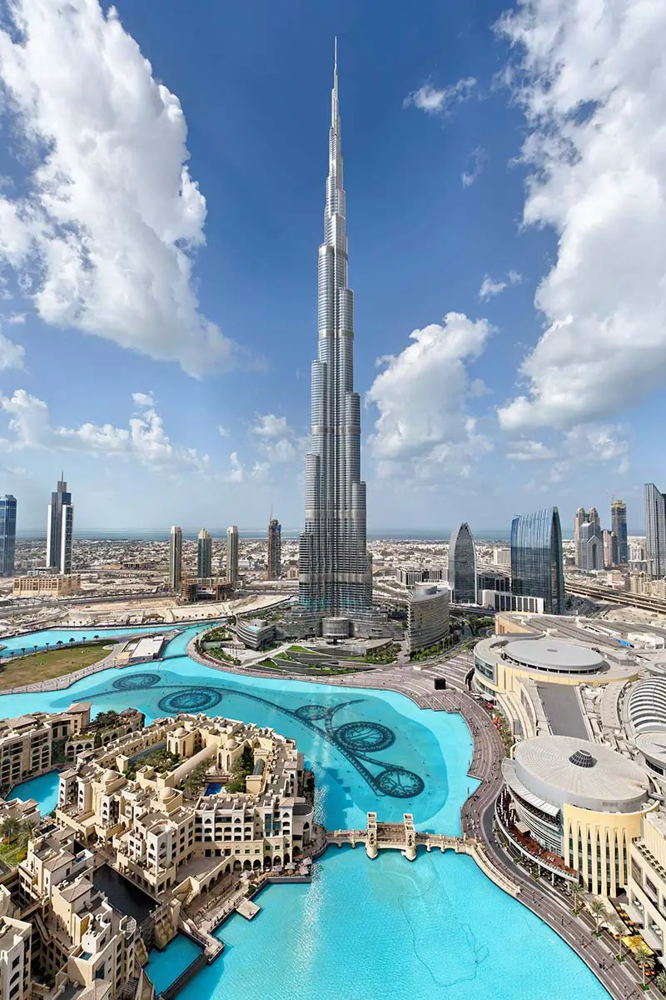
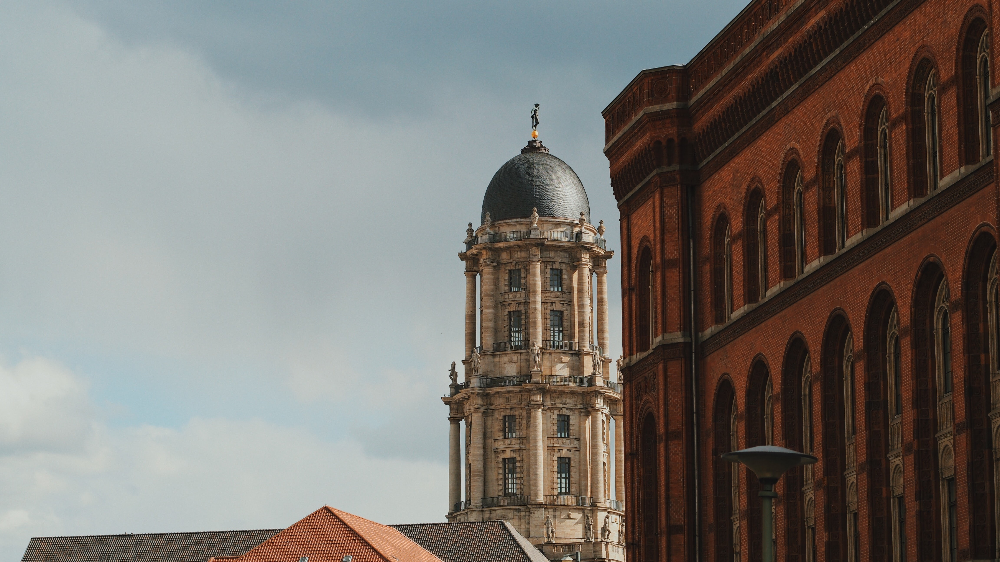
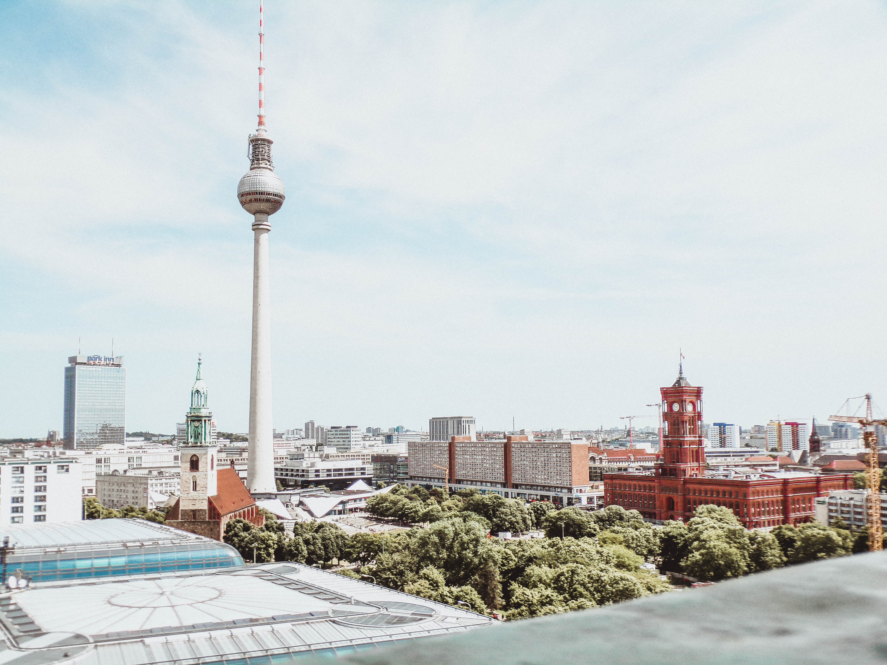

Travel Places to Go
Rome

Geographical Location: Europe
A heady mix of haunting ruins, awe-inspiring art and vibrant street life, Italy's hot-blooded capital is one of the world's most romantic and charismatic cities.
It is famous for being the home of the ancient Roman Empire, the Seven Hills, La Dolce Vita (the sweet life), the Vatican City and Three Coins in the Fountain. Rome, as a millennia-long center of power, culture (having been the cradle of one of the globe's greatest civilisations ever) and religion, has exerted a huge influence over the world in its roughly 2800 years of existence.
Photo Gallery


Zermatt, Switzerland

Zermatt is a beautiful place, with 365 degree views of the mountains. It’s known for its famous mountain “the Matterhorn,” which is visible from nearly everywhere in the town. The town is vibrant, filled with patrons walking around, shopping for the most high quality snow boots, eating hot Rosti and drinking wine.
The skiing in Zermatt is unparalleled. Every day in the winter you can find people skiing all day. When it snows, the mountain becomes even more crowded, with skiers flocking to the mountain from around the country and the world.
Photo Gallery


Paris, France

A city of culture, rich history, and fantastic food, Paris lives up to its iconic reputation in many ways. With notable landmarks including the Eiffel Tower, the Louvre, the Notre Dame, and the Arc de Triomphe, there is a long list of attractions that entice tourists from all over the world. If you get hungry, go visit one of the many Michelin-starred restaurants this city has to offer.
This magnificent city houses treasures like the Mona Lisa, and the Musée d'Orsay, showcasing various impressionist masterpieces. From the romantic allure of the Champs-Élysées to the winding Seine river, Paris is a magical place that cannot be rivaled.
Photo Gallery


Dubai, United Arab Emirates
Dubai is a growing attraction for many travelers. This city is located in the United Arab Emirates on the southeastern coast of the Persian Gulf. Dubai is renowned for its iconic architecture, luxurious lifestyle, and rapid development. Dubai is a global hub for tourism, innovation, and business.
Dubai is a futuristic oasis in the middle of the desert. This city offers a unique blend of tradition and modernity. Towering skyscrapers offer a breathtaking skyline view. Dubai contains iconic buildings, malls, and islands that fuel its tourism.
Photo Gallery


Berlin
 Geographical Location: Europe
A heady mix of haunting ruins, awe-inspiring art and vibrant street life, Italy's hot-blooded capital is one of the world's most romantic and charismatic cities.
It is famous for being the home of the ancient Roman Empire, the Seven Hills, La Dolce Vita (the sweet life), the Vatican City and Three Coins in the Fountain. Rome, as a millennia-long center of power, culture (having been the cradle of one of the globe's greatest civilisations ever) and religion, has exerted a huge influence over the world in its roughly 2800 years of existence.
Photo Gallery


New York


Geographical Location: North America
The city is at the center of international finance, politics, entertainment, and culture, and is one of the world's major global cities
Photo Gallery